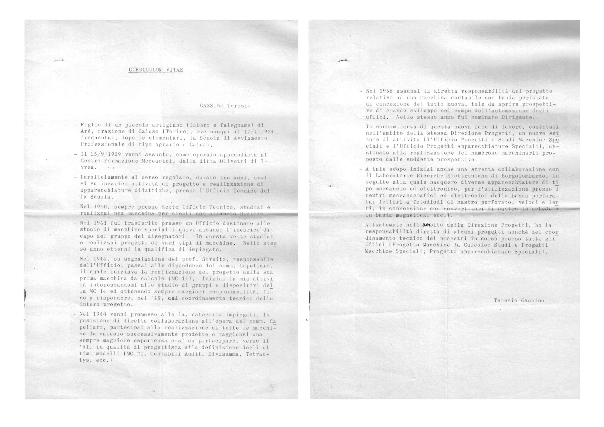
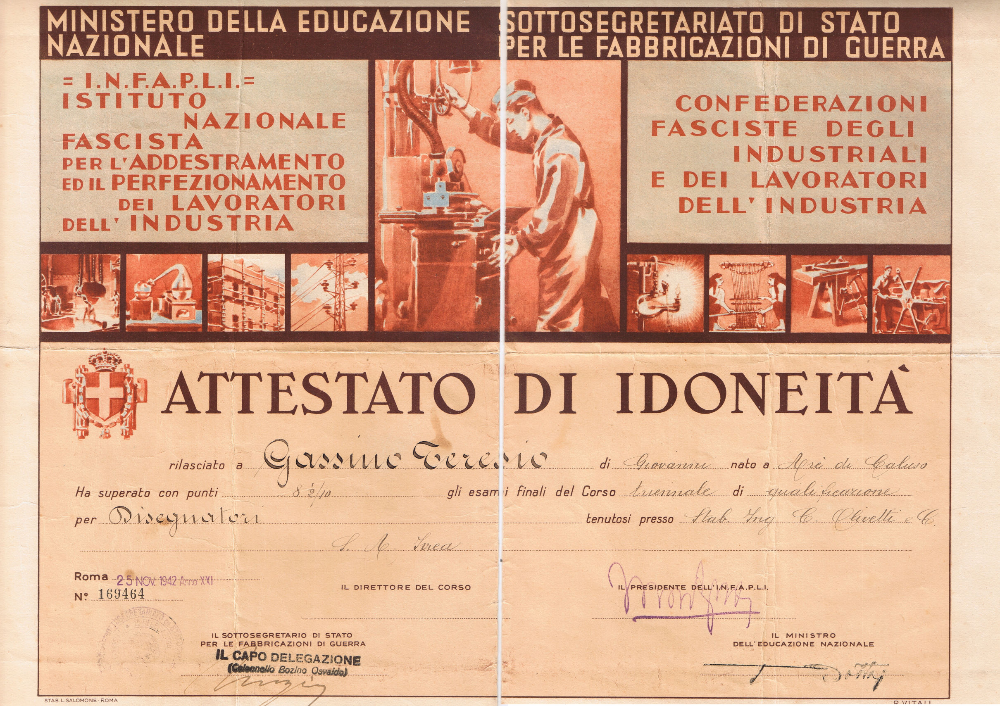
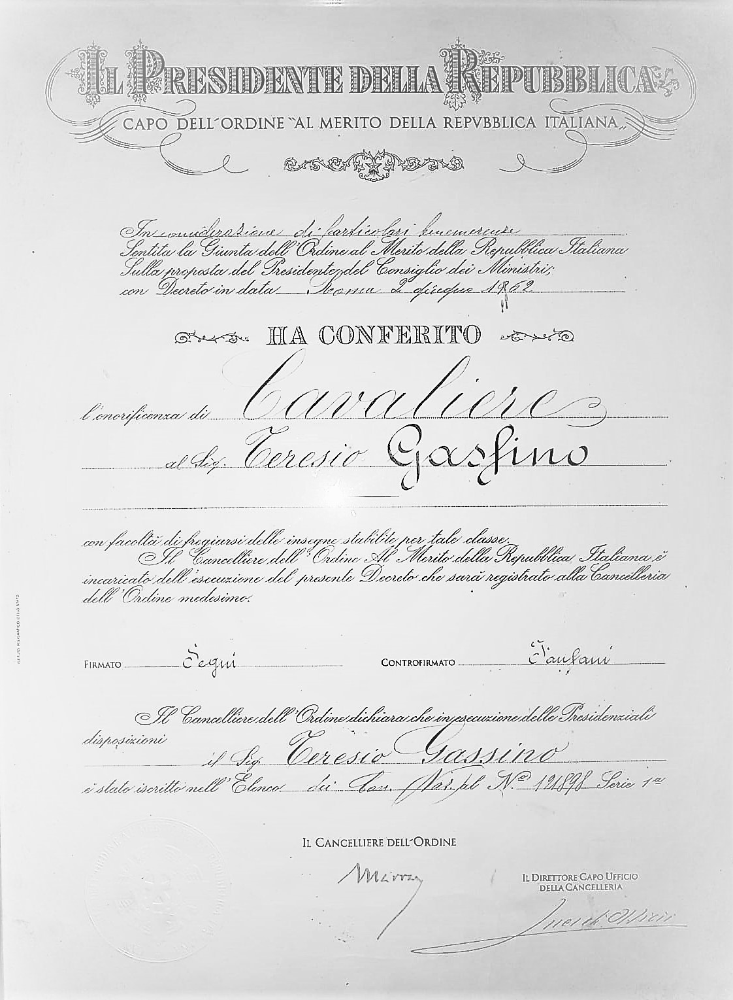

Curriculum

Curriculum vitae compilato da Teresio presumibilmente in un momento successivo alla nomina a Dirigente del 1956, quando è responsabile del coordinamento tecnico dei progetti in corso presso tutti gli uffici (Progetto Macchine da Calcolo, Studi e Progetti Macchine Speciali, Progetto Apparecchiature Speciali) e responsabile diretto di alcuni dei progetti.
Fonte: archivio personale (pdf disponibile).

Nel 1942 consegue il diploma di disegnatore presso il Centro Formazione Meccanici Olivetti.
Fonte: archivio personale.

Nel 1962 è nominato Cavaliere dell’Ordine al Merito della Repubblica Italiana.
Fonte: archivio personale.